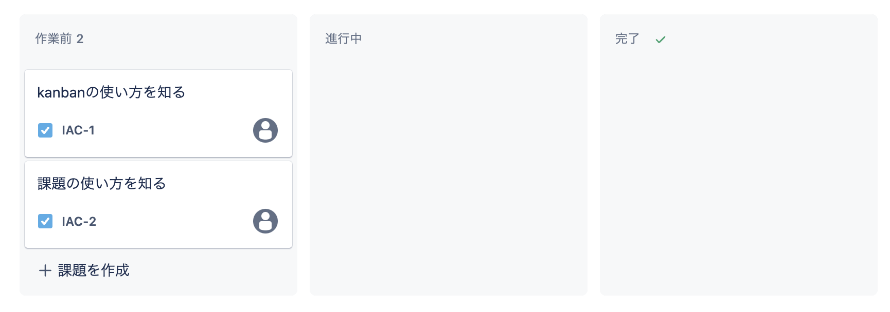
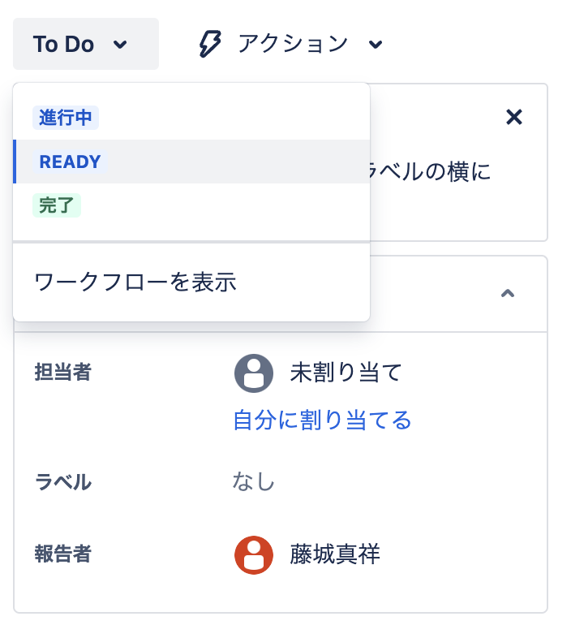
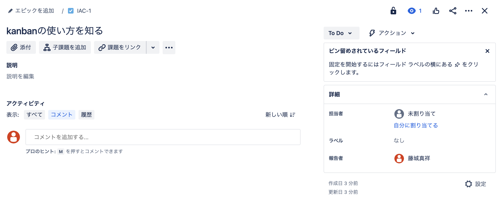
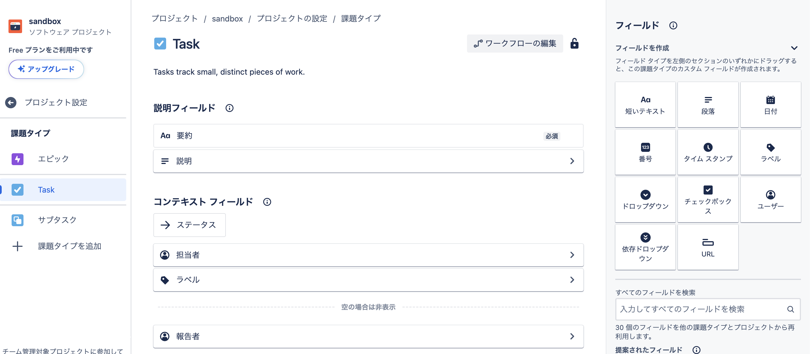
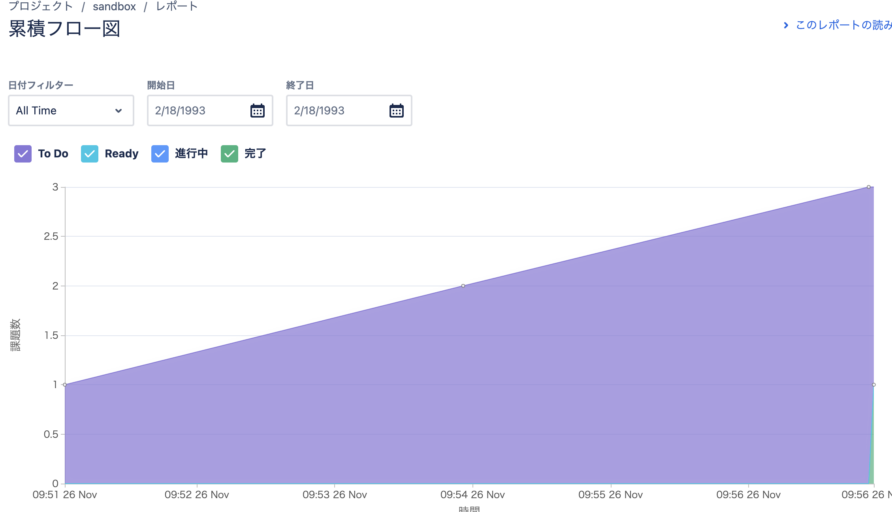

jiraによるタスク管理¶
JIRAについて¶
JIRAはatlassian社が提供しているチケット管理ツールであり、特にアジャイルのためのプロジェクト管理ツール。 Jiraの活用事例 ～課題管理編～で語られているが、色々利用方法があり、自分達にフィットした利用方法を見つけるのが難しいと思う。
Jiraは高機能でやろうと思えば様々なことが実現できる反面、自由度が高く、効果的な使い方に行きつくには時間をかけて試行錯誤をする必要があるように思えます。インターネットで活用事例を探そうにも、なかなか自分にフィットする使い方が見つからないのではないでしょうか。
各種用語¶
基本設定¶
jiraの無償版の申し込みをする。jiraのサイトから簡単に無償版の申請ができる。
課題管理方法¶
kanbanの作成¶
kanbanを利用して、課題管理をしてみよう。Jiraの活用事例 ～課題管理編～を踏襲する形でkanbanを作成する。
最初から、ステータスが「作業前、進行中、完了」と作成されており、レーンに分かれている。 
ステータスの追加¶
レーンを事前に設定されたものだけでなく追加したい場合は、右側の「+」から追加でき、自動的にステータスにも追加される。 今回はReadyを追加。 
課題の作成¶
kanbanから課題を追加することができる。 追加した課題からは以下ができるようだ
エピックの追加
子課題の追加
課題のリンク
説明の追加
コメント
担当者割り当ての追加 
課題の項目の追加¶
設定>プロジェクト設定>課題タイプから、課題タイプごとのテンプレートとして項目自体を追加することができる。

今回はpriorityを追加することで、課題を作成するとpriorityが追加されている

レポート¶
レポート機能を利用すると、タスクの累積フロー図などをみることができる
